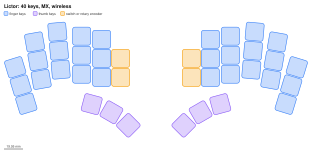
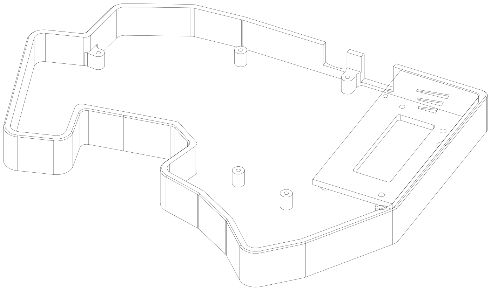
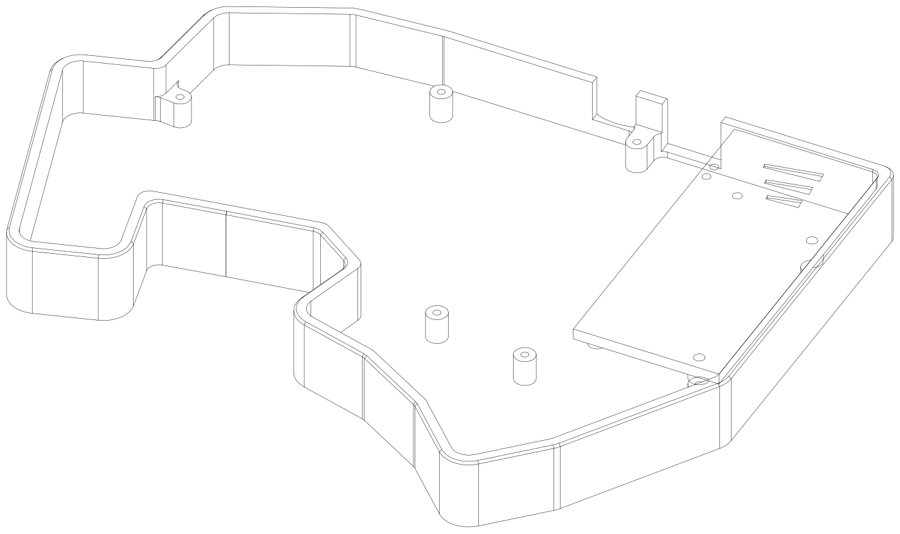
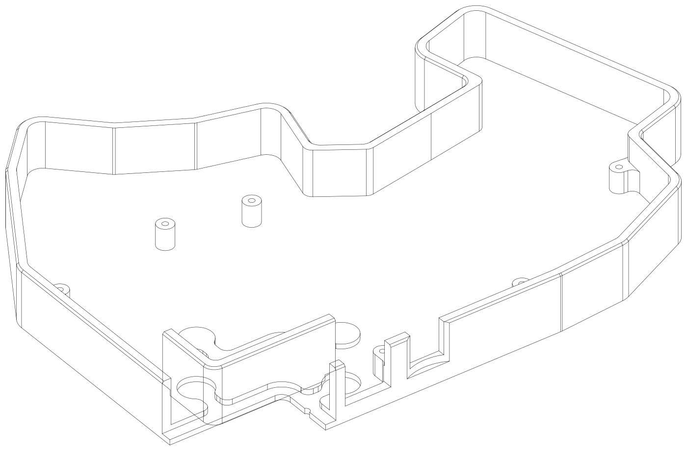
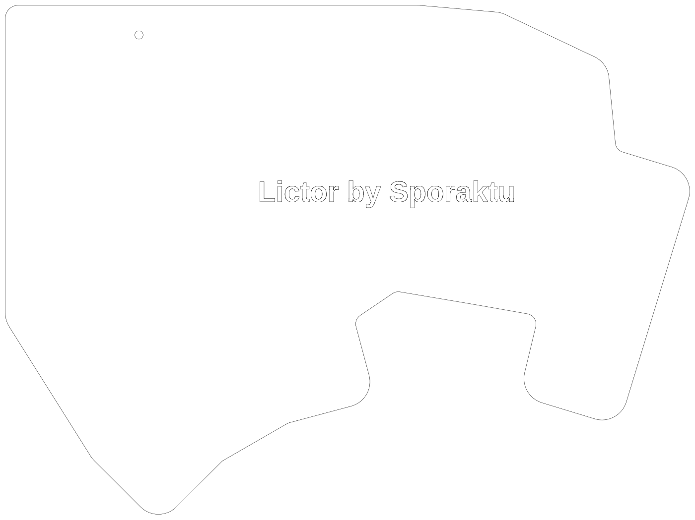

Lictor by Sporaktu
Sporaktu's split, wireless keyboard with forty MX keys. The radio and every other chip are on the main boards, and the board factory solders them.
Loading the drawing

Drag to turn it.
What it is
Forty keys, all one size
Each half has a splayed three-by-five field for the fingers, three thumb keys and two extra keys at the inner edge. Every key is one unit wide, so any MX keycap set covers it.
Nothing plugged in, nothing to solder
There is no controller board on pin headers. An nRF52840 radio module is soldered straight to each half, with the charger, sockets and lights, by the factory that makes the board. The builder solders only the optional parts.
No wires
A battery in each half, and no cable between them. The left half talks to the computer over Bluetooth or USB; the right half sends its keys to the left by radio.
Hot-swap switches
Every key has a socket. Switches push in and pull out. There is no switch plate, so use PCB-mount (five-pin) switches: a three-pin switch stands crooked.
Knobs where you want them
Each of the four inner keys takes a switch or an EC12 rotary encoder, chosen when you build. An encoder still clicks as a key.
Lights and a screen, if you want them
A layer light and a status light on each half. Per-key RGB lights are chosen when ordering, and a nice!view screen fits on a socket. The board works without any of them.
USB-C on both halves
For charging and for loading firmware. A slide switch on the back edge turns each half off.
Drawn by scripts
The two-layer boards, the case and the firmware's pin tables all come from one set of Python tables. Change a number and everything that depends on it is redrawn and rechecked.
The layout
The finger keys follow the rae-dux: each column is turned and stepped to follow the finger that uses it. The Lictor re-spaces that geometry from low-profile keys to the MX pitch of 19.05 mm.
The thumb keys are the rae-dux's three-key fan, moved half a key outward. The two extra inner keys per half are the Corne v4.1's idea, set level with the home and bottom rows.
Pick a board to lay the Lictor's left half over it, with the index finger's home keys lined up.

Layers
Forty keys reach everything through layers: hold a thumb key and the keys under your fingers change. This is the keymap the firmware ships with, fifteen layers and thirteen combos. Pick a layer, or press a layer key on the drawing to follow it.
- The knobs turn
- Keys pressed together
A faint legend is a key the layer leaves alone: it does what the layer underneath does. The dot beside each layer's name is the colour the layer light shows on the left half.
Make it yours
When you order the boards
- Key lights or none. There are two parts lists per half. One fits an RGB light under every key; the other leaves them off.
- Assembled or bare. The files are prepared for JLCPCB to fit the parts. The same files serve for hand assembly, which needs hot air or a hotplate for the radio module.
When you build
- Switches. Any five-pin MX switch, in the sockets.
- Knobs. An EC12 encoder at any of the four inner keys.
- A screen. A nice!view on its socket, on either half or both.
- A case. Plastic or metal, printed or machined, with a windowed or a plain cover.
When you use it
- Change keys from a browser. The firmware is ZMK with ZMK Studio built in. Press the unlock key on the SYSTEM layer and move keys about over USB or Bluetooth, with nothing to install.
- Change anything in the keymap file. Layers, combos, macros and what the knobs do are plain text in one file. Push a change to your copy of the repository and GitHub builds the firmware.
- Load it by dragging a file. Press reset twice and the half shows up as a USB drive.
If you want a different board
- Every dimension has a name. Key spacing, column stagger, case clearances and wall thickness are constants at the top of the scripts.
- The checks run again. Design rules, the case's fit against the board and the firmware's pins are tested each time, so a change that breaks something says so.
The case
Each half sits in a tray, on seven posts, with the battery on the floor beneath it. A small cover plate goes over the electronics; the keys stay open. Each part is shaped from one side only, so the same files suit a printer and a three-axis mill.
| Build | Tray | Cover |
|---|---|---|
| Printed plastic | One piece | Windowed for the screen, or plain |
| Machined plastic | One piece | |
| Machined or printed metal | Metal, with a plastic piece at the antenna corner | Always plastic |
Metal blocks radio, so the metal tray stops 10 mm short of the antenna and a plastic corner piece drops into the gap. A metal tray also needs its floor insulated, because the battery lies on it.
The three bars from the logo are cut into every cover, and “Lictor by Sporaktu” into the underside of every tray.
A stand-in for the board comes with the files, so you can try the fit on your own printer before ordering a machined case.



